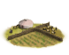
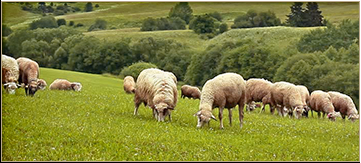
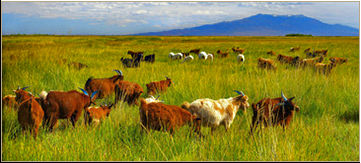
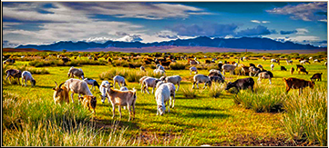

RTR: Imperium Surrectum
RTR: Imperium SurrectumNomad Communal Herding (Husbandry) chain
3 levels, each replacing the one before it — you upgrade in place rather than building alongside.
Nomad Communal Herding (Husbandry) → Water Covenants (Husbandry) → Breeding Stock Exchanges (Husbandry)
Pictures are the game's own building art. Where a culture ships none of its own, the game falls back to another culture's, and that is what is shown here.
Levels at a glance
| Level | Cost | Build time | Minimum settlement | Upgrades to | Level | Cost | Build time | Minimum settlement | Upgrades to | ||
|---|---|---|---|---|---|---|---|---|---|---|---|
| Nomad Communal Herding (Husbandry) | 750 | 1 | town | Water Covenants (Husbandry) | Water Covenants (Husbandry) | 1,500 | 2 | large town | Breeding Stock Exchanges (Husbandry) | ||
 | Breeding Stock Exchanges (Husbandry) | 2,500 | 3 | city | — |
Costs in denarii, build time in turns.
Water Covenants (Husbandry)

An agreement between tribes over water rights, ensuring access along migration routes
On both the steppes and in the deserts the scarity of water is a significant limiter on the size of herds and on human habitation. Though nomadic tribes are not tied to any one location they need the surety that whenever they migrate there will be adequate water along the route for both man and beast. This problem can be resolved by making treaties with other tribes and sometimes even lowly sedentary farmers to share water resources, or rotate control over them. In the driest areas these groups might cooperate in building and maintaining wells, cisterns and marker cairns. Strict customs and social norms around the usage of this infrastructure evolved, such as prohibitions against denying water to travellers and against the misuse of the wells.
Nomadic pastoralism is available here because this is either a steppes or a desert region. For nomadic factions it is also available in grassland regions. In deserts without sources of irrigation it may be the only farming option.
Note on the effects
Some levels of this building chain might have both positive and negative growth modifiers on the same building, this is due to a modding limitation. In these cases, all effects apply. So if it says +3 growth and -0.5 growth, your total growth is +2.5.
Tip: put any building in the building queue (and only that one) and look at the 'Settlement income' and 'Settlement details' tabs to see its complete effects highlighted in green and red.
| Cost | 1,500 denarii | Build time | 2 turns | Minimum settlement | large town | Upgrades to | Breeding Stock Exchanges (Husbandry) |
What it does
- -2 population growth (player only)
Show 19 effects that apply only in the circumstances shown
- +3 farming level — only when
not faction_nomad_farming and not resource horses and not resource livestock and not resource camels - +4 farming level — only when
not faction_nomad_farming and resource horses and not resource livestock and not resource camels - +4 farming level — only when
not faction_nomad_farming and not resource horses and resource livestock and not resource camels - +4 farming level — only when
not faction_nomad_farming and not resource horses and not resource livestock and resource camels - +4 farming level — only when
not faction_nomad_farming and resource horses and resource livestock and not resource camels - +4 farming level — only when
not faction_nomad_farming and not resource horses and resource livestock and resource camels - +4 farming level — only when
not faction_nomad_farming and resource horses and not resource livestock and resource camels - +4 farming level — only when
not faction_nomad_farming and resource horses and resource livestock and resource camels - +5 farming level — only when
faction_nomad_farming and resource horses and not resource livestock and not resource camels - +5 farming level — only when
faction_nomad_farming and not resource horses and resource livestock and not resource camels - +5 farming level — only when
faction_nomad_farming and not resource horses and not resource livestock and resource camels - +5 farming level — only when
faction_nomad_farming and resource horses and resource livestock and not resource camels - +5 farming level — only when
faction_nomad_farming and not resource horses and resource livestock and resource camels - +5 farming level — only when
faction_nomad_farming and resource horses and not resource livestock and resource camels - +5 farming level — only when
faction_nomad_farming and resource horses and resource livestock and resource camels - -2 population growth — only when
not is_player and building_present_min_level nomadic_pastoralism nomadic_herding - +1 trade income — only when
salt_building_supply and not nomad_trade_animals - +1 trade income — only when
not salt_building_supply and nomad_trade_animals - +2 trade income — only when
salt_building_supply and nomad_trade_animals
Nomad Communal Herding (Husbandry)

The basic nomadic existence, herding the flocks in close tribal cooperation
In nomadic society all business is the tribes business and the tribes business is herding, though waging war is a close second. Herding on the plains involves protecting the animals from predators and raiders and moving them with the seasons so they never lack for water and grazing. In turn the tribe gains a continual supply of meat, dairy and hides. For greater protection the tribe now herds their flocks communally even though many of the animals remain the property of individual members. The tribesmen also greatly enjoy the hunting season, sometimes even performing a 'circle hunt' where riders form a wide circle before tightening it and driving all the animals caught within the circle together in a narrow space to be hunted.
Nomadic pastoralism is available here because this is either a steppes or a desert region. For nomadic factions it is also available in grassland regions. In deserts without sources of irrigation it may be the only farming option.
Note on the effects
Some levels of this building chain might have both positive and negative growth modifiers on the same building, this is due to a modding limitation. In these cases, all effects apply. So if it says +3 growth and -0.5 growth, your total growth is +2.5.
Tip: put any building in the building queue (and only that one) and look at the 'Settlement income' and 'Settlement details' tabs to see its complete effects highlighted in green and red.
| Cost | 750 denarii | Build time | 1 turn | Minimum settlement | town | Upgrades to | Water Covenants (Husbandry) |
What it does
- -1 population growth (player only)
Show 11 effects that apply only in the circumstances shown
- +2 farming level — only when
faction_nomad_farming and not resource horses and not resource livestock and not resource camels - +2 farming level — only when
not faction_nomad_farming - +3 farming level — only when
faction_nomad_farming and resource horses and not resource livestock and not resource camels - +3 farming level — only when
faction_nomad_farming and not resource horses and resource livestock and not resource camels - +3 farming level — only when
faction_nomad_farming and not resource horses and not resource livestock and resource camels - +3 farming level — only when
faction_nomad_farming and resource horses and resource livestock and not resource camels - +3 farming level — only when
faction_nomad_farming and not resource horses and resource livestock and resource camels - +3 farming level — only when
faction_nomad_farming and resource horses and not resource livestock and resource camels - +3 farming level — only when
faction_nomad_farming and resource horses and resource livestock and resource camels - -1 population growth — only when
not is_player and building_present_min_level nomadic_pastoralism nomadic_herding - +1 trade income — only when
nomad_trade_animals
Breeding Stock Exchanges (Husbandry)

Regular echanges of breeding stock with other tribes to improve our herds
One advantage of moving all over the place is the ability to take in the best from all over. This applies to the livestock of the tribe above all. As we move across the steppes and deserts we meet with other tribes who often have animals to trade, to loan out or to put to stud. As such the animals with the very best properties can quickly have descendents in every herd across the wide breath of the plains. Along well travelled routes of trade and migration like the northern silk road there may even by designated points where livestock markets would regularly spring up before disbanding again. Such exchanges with other tribes often form the basis for actual alliances and perhaps even the formation of a tribal confederation to make the world tremble.
Nomadic pastoralism is available here because this is either a steppes or a desert region. For nomadic factions it is also available in grassland regions. In deserts without sources of irrigation it may be the only farming option.
Note on the effects
Some levels of this building chain might have both positive and negative growth modifiers on the same building, this is due to a modding limitation. In these cases, all effects apply. So if it says +3 growth and -0.5 growth, your total growth is +2.5.
Tip: put any building in the building queue (and only that one) and look at the 'Settlement income' and 'Settlement details' tabs to see its complete effects highlighted in green and red.
| Cost | 2,500 denarii | Build time | 3 turns | Minimum settlement | city |
What it does
- -3 population growth (player only)
Show 19 effects that apply only in the circumstances shown
- +5 farming level — only when
not faction_nomad_farming and not resource horses and not resource livestock and not resource camels - +6 farming level — only when
not faction_nomad_farming and resource horses and not resource livestock and not resource camels - +6 farming level — only when
not faction_nomad_farming and not resource horses and resource livestock and not resource camels - +6 farming level — only when
not faction_nomad_farming and not resource horses and not resource livestock and resource camels - +6 farming level — only when
not faction_nomad_farming and resource horses and resource livestock and not resource camels - +6 farming level — only when
not faction_nomad_farming and not resource horses and resource livestock and resource camels - +6 farming level — only when
not faction_nomad_farming and resource horses and not resource livestock and resource camels - +6 farming level — only when
not faction_nomad_farming and resource horses and resource livestock and resource camels - +7 farming level — only when
faction_nomad_farming and resource horses and not resource livestock and not resource camels - +7 farming level — only when
faction_nomad_farming and not resource horses and resource livestock and not resource camels - +7 farming level — only when
faction_nomad_farming and not resource horses and not resource livestock and resource camels - +7 farming level — only when
faction_nomad_farming and resource horses and resource livestock and not resource camels - +7 farming level — only when
faction_nomad_farming and not resource horses and resource livestock and resource camels - +7 farming level — only when
faction_nomad_farming and resource horses and not resource livestock and resource camels - +7 farming level — only when
faction_nomad_farming and resource horses and resource livestock and resource camels - -3 population growth — only when
not is_player and building_present_min_level nomadic_pastoralism nomadic_herding - +1 trade income — only when
salt_building_supply and not nomad_trade_animals - +1 trade income — only when
not salt_building_supply and nomad_trade_animals - +2 trade income — only when
salt_building_supply and nomad_trade_animals
What the shorthands in those conditions stand for (3)
These are the mod's own, quoted from the game files unchanged.
| Shorthand | Stands for | Shorthand | Stands for | Shorthand | Stands for | ||
|---|---|---|---|---|---|---|---|
faction_nomad_farming | any one of 1 alternatives — too long to quote here | nomad_trade_animals | resource camels or resource livestock or resource horses or resource sheep or resource wild_animals | salt_building_supply | resource salt or hidden_resource salt_supply_built factionwide |